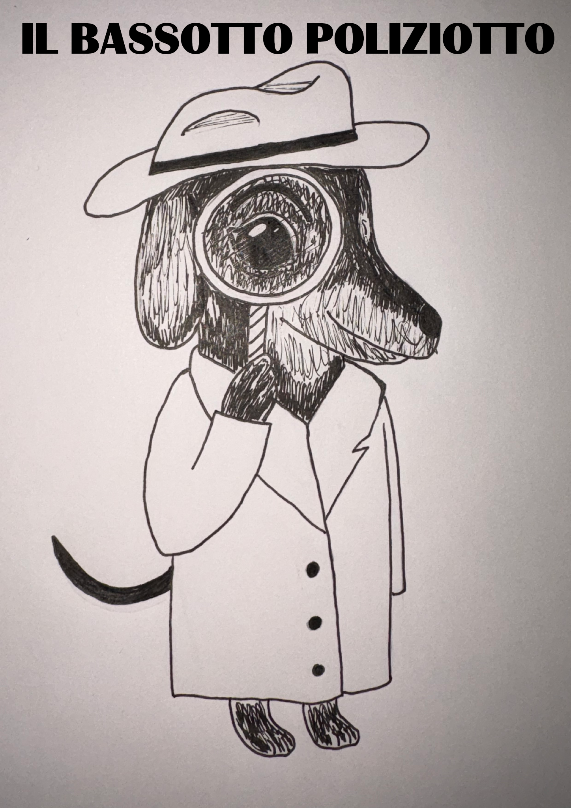

Ufficio investigativo
Caso n. 001
Il bassotto
poliziotto
Un'indagine molto importante.

Richiesta
di contatto
CONTATTA IL DETECTIVE SU WHATSAPP
di contatto
♪ Colonna sonora: Bruno Lauzi — Il bassotto poliziotto
DOCUMENTO CONFIDENZIALE · DA NON MOSTRARE AI SOSPETTATI